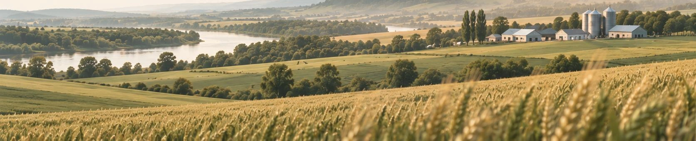

Башкирское поле экспериментов
Молодёжная программа по агротехнологиям для школьников 14–17 лет из посёлка Чишмы.
С 1 апреля по 31 октября 2027 года
Вызов для малых хозяйств
Небольшому хозяйству трудно конкурировать с агрохолдингом по цене и объёму поставок. Где фермер может получить больше от того, что уже выращивает и умеет?
Экономист Владислав Меленкин называет агрокреаномикой соединение сельского хозяйства с креативными индустриями. Знания людей, технологии и особенности места могут придать продукту дополнительную ценность. У хозяйства появляются и другие источники выручки, например переработка, гастрономические маршруты и сервисы для покупателей.
Небольшой команде проще договориться об эксперименте. Если рядом есть школа, наставник и люди, которые знают производство, можно проверить идею на месте и понять, стоит ли её развивать.
Почему Чишмы
У района есть своя история аграрных экспериментов. На опытных полях селекционеры вывели рожь «Чулпан», а на метеостанции собирали наблюдения за погодой.
Другой пример из истории района связан с комбайнёром Чишминской МТС Бакиром Валиевым. Районный информационно-консультационный центр называет его первым стахановцем района. Школьники смогут посмотреть на трудовое новаторство с сегодняшней точки зрения. Что может изменить в своём деле человек, который знает его изнутри?
Креативная экспедиция в Чишминский район в 2026 году связала этот опыт с перспективами местных предпринимателей. Программа продолжает исследование района вместе с молодыми жителями.
Страна возможностей
Цель проекта
Создать в Чишмах среду, где молодёжь сможет применять свои творческие способности в сельском хозяйстве через работу над собственными проектами в области агрокреаномики.
Подросток из посёлка Чишмы сможет попробовать себя в работе, которую редко видит в школьном расписании. Тот, кому интересны цифровые технологии, может спроектировать сервис. Тот, кому ближе экономика, может проверить спрос и посчитать стоимость запуска. Обеим командам пригодится умение задавать вопросы, договариваться и обосновывать свой выбор.
Четыре встречи в одной школе
В апреле и мае на четырёх вводных встречах мы познакомим с программой 200 школьников. На каждую встречу придёт отдельная группа из 50 человек.
Ребята смогут рассказать, чем хотят заняться и какая помощь им нужна. Из участников встреч отберём 30 наиболее заинтересованных школьников. С июня они продолжат занятия в шести командах по пять человек.
Образовательная программа Башкирского поля экспериментов
С июня по сентябрь школьники научатся превращать наблюдение в исследовательский вопрос или предпринимательский замысел. Тему, с которой работать дальше, ребята выберут сами.
На выездах в два хозяйства команды будут учиться вести интервью, замечать повторяющиеся трудности и проверять, одинаково ли их видят разные люди. В Башкирском ГАУ и кампусе Евразийского НОЦ познакомятся с путём университетской разработки от замысла до первого применения.
На занятиях по экономике ребята научатся считать затраты и оценивать спрос. На практикумах по ИИ будут сверять ответы модели с исходными данными. В мастерской аграрного дизайна опишут путь пользователя и соберут прототип сервиса. С наставником каждая команда проверит, на чём основаны её выводы.
Пример проекта
Предположим, в разговоре с хозяйством школьники заметят, что заказы приходят в нескольких чатах. Что поможет понять, сколько товара собрать к нужному дню?
Команда может придумать чат-бота, который уточнит товар, количество и дату, а затем соберёт для фермера список заявок. Для бизнес-плана ребята оценят, кому нужен сервис и сколько стоит его вести. Для исследовательского проекта сравнят два способа приёма заказов и проверят, при каком теряется меньше заявок.
Это один из возможных примеров. Образовательным результатом станут шесть самостоятельных бизнес-планов или проектов научно-исследовательских и опытно-конструкторских работ (НИОКР) в области сельского хозяйства 4.0, агрокреаномики и креативных индустрий.
Календарь встреч
Апрель и май
- 8 апреляВводная встреча для группы 1 в школе посёлка Чишмы
- 22 апреляВводная встреча для группы 2 в школе посёлка Чишмы
- 13 маяВводная встреча для группы 3 в школе посёлка Чишмы
- 20 маяВводная встреча для группы 4 в школе посёлка Чишмы
Июнь и июль
- 23 июняЗанятие о творческих профессиях в сельском хозяйстве
- 30 июняЗанятие по экономике местного продукта
- 7 июляПервый практикум по искусственному интеллекту
- 14 июляОбразовательный выезд в Башкирский ГАУ
- 21 июляПервая встреча с хозяйством Чишминского района
Август
- 11 августаВторая встреча с хозяйством Чишминского района
- 18 августаАграрный дизайн. Проектирование сервиса
Сентябрь
- 3 сентябряПроектное занятие по выбору идеи и формата защиты
- 10 сентябряВыезд в кампус Евразийского НОЦ и встреча с МИП
- 15 сентябряВторое проектное занятие и практикум по ИИ
- 20 сентябряИндивидуальная консультация команды 1
- 21 сентябряИндивидуальная консультация команды 2
- 22 сентябряИндивидуальная консультация команды 3
- 23 сентябряИндивидуальная консультация команды 4
- 24 сентябряИндивидуальная консультация команды 5
- 27 сентябряИндивидуальная консультация команды 6
Октябрь
- 8 октябряПервая конференция по агрокреаномике Республики Башкортостан
- 29 октябряИтоговая встреча школьных команд в Чишмах
Первая конференция по агрокреаномике Республики Башкортостан
8 октября в Уфе планируем собрать 70 участников. Это 30 школьников и 40 аграриев. Шесть команд представят свои работы в профессиональном кругу и соберут отзывы.
В числе планируемых спикеров Владислав Меленкин, кандидат экономических наук и автор исследования об агрокреаномике. Его работа объясняет, откуда берётся добавочная стоимость на стыке сельского хозяйства и креативных индустрий.
Александр Старков, урбанист и создатель Школы живых городов, подготовил доклад по итогам креативной экспедиции в Чишмы. Мария Орешникова, продюсер, автор идеи и креативный директор фестиваля «Купец 2.0» в Стерлитамаке, поделится опытом развития творческих индустрий в регионе.
Как оцениваем результат проекта
Сопоставим ответы тех же 30 школьников в начале и в конце программы. Задача в том, чтобы не менее 24 участников смогли объяснить собственный вклад и назвать следующий шаг.
У каждой команды останутся две версии своей работы и письменный отзыв. По ним можно будет проследить, что авторы решили доработать после конференции и почему. Ожидаем содержательные отзывы не менее чем от 20 из 40 аграриев.
За всю инициативу планируем вовлечь 240 человек, в том числе 200 школьников и 40 аграриев. В грантовый период с июня по октябрь участвуют 70 человек. Это 30 школьников из числа пришедших весной и те же 40 аграриев.
После программы
На занятиях школьники попробуют взять интервью, проверить идею на данных и посчитать затраты на её запуск. Этот опыт поможет выбрать, что изучать дальше и где применить свои навыки рядом с домом, например в местном хозяйстве или в собственном деле.
ООО «Мироселье» готовит Центр агрокреаномики «Дом фермера». В будущих мастерских в Верхних Термах ребята смогут вернуться к своей идее с наставником, испытать прототип и решить, что делать дальше.
Открыть полное описание проекта в PDFКак участвовать
Программа в разработке. Выберите свою роль, чтобы узнать, какое участие мы предлагаем.
Школам
В апреле и мае 2027 года пройдут четыре вводные встречи в одной школе посёлка Чишмы. Из 200 школьников 14–17 лет отберём 30 заинтересованных ребят. В шести командах они выберут свои темы, освоят методы исследования и составят планы собственных проектов.
Посмотреть путь школьной командыАграриям
Хозяйство может принять ребят на выезде. Знакомство с производством, продажей продукции и повседневной работой даст школьникам материал для собственных вопросов. На 8 октября в Уфе запланирована Первая конференция по агрокреаномике Республики Башкортостан.
О конференцииПартнёрам
Вузы, технологические компании и эксперты могут предложить наставника, практикум или встречу с разработчиками. В концепции центра предусмотрено место для учебной и проектной работы.
Изучить концепцию центра